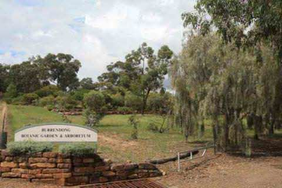
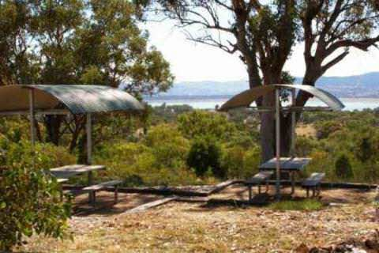

PHONE
PHONE GET DIRECTIONS
GET DIRECTIONS- 
-

- 
-

OPENING HOURS: Open every day except Christmas day.
COORDINATES: 32º41'17.87"S, 149º6'30.67"E
LOCATION: The Arboretum is co-located with Lake Burrendong State Park and the Burrendong Sport Recreation Centre, only one hour's drive from either Dubbo or Orange and five hours from Sydney. If you are coming from the north of the state, the park is 27km south-east of Wellington.